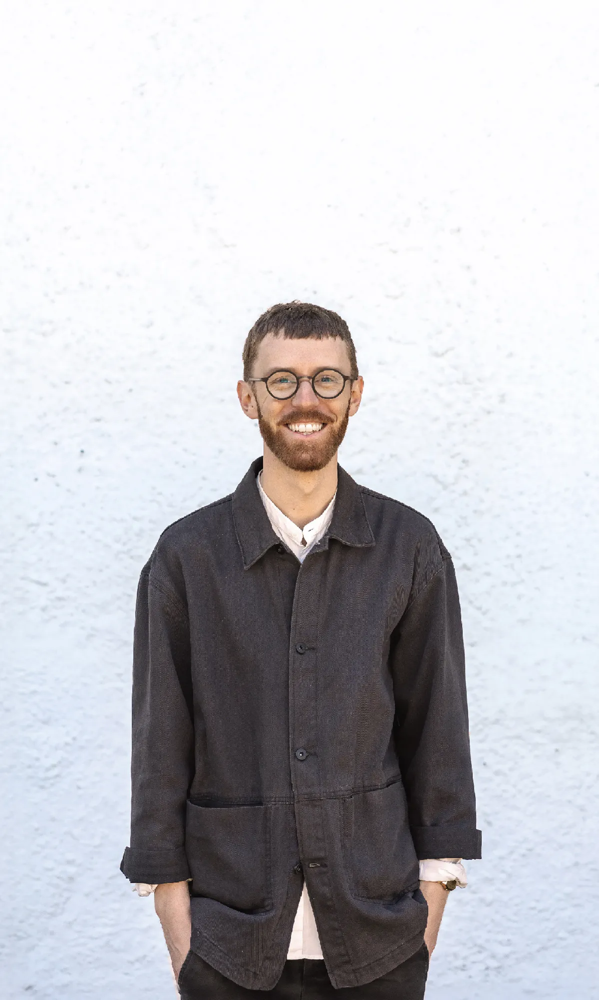

Lokal förankring, bred erfarenhet
Essens Arkitektur har sin bas i Alingsås. Arbetsområdet omfattar större delen av Västsverige – inom våra specialområden även längre än så.

Arkitekt SAR/MSA
Företaget drivs av Joakim Sätterman, arkitekt SAR/MSA. Innan han grundade företaget 2022 arbetade han i åtta år på ett större arkitektkontor, med ansvar för projekt samt ledningsuppgifter.
Vi har en bred projekterfarenhet, främst bostäder och kontor/industri men även stadsbyggnad/fastighetsutveckling, förskolor, kyrkor etc.
Joakim har en utbildning i Arkitektur & Teknik från Chalmers Tekniska Högskola, vilket utöver en masterexamen i Arkitektur & Stadsbyggnad även innefattar ingenjörsutbildning inom konstruktion, byggnadsfysik, akustik etc.
Att fånga arkitekturens essens
Arkitektur har kraften att möta människans grundläggande behov genom väl genomtänkta byggnader och miljöer. För att uppnå detta arbetar vi utifrån tre ledord: Förenkla, Försköna & Förvalta.
Förenkla
God arkitektur kan förenkla människors vardag, skapa förutsättningar för möten och trivsel, rum för både kreativitet och rekreation.
Förenkla kan också gälla själva utformningen, där den mest rationella lösningen ofta är den enklaste – ur ekonomiska, funktionella, tekniska och estetiska perspektiv.
Försköna
Studier visar att väl utformade miljöer påverkar hur vi mår! Vi strävar därför efter att våra projekt ska försköna och förbättra.
Detta innefattar omsorg om både helhet och detaljer, en inlevelse i hur människor använder byggnaderna och hur platsens potential kan lyftas fram och utvecklas.
Förvalta
Varje projekt börjar med ett förtroende från våra kunder, vilket vi förvaltar genom att lyhört anpassa oss till projektets ekonomiska, tekniska och funktionella förutsättningar.
Vårt ansvar går dock längre än den direkta beställaren. Vi värnar om projektets hållbarhet och ser till ekologiska, sociala och ekonomiska aspekter för att skapa en hållbar helhet.

Låt oss ta det första steget tillsammans.
Ett första möte är alltid förutsättningslöst. Vi träffas gärna på platsen och går igenom era förutsättningar och önskemål.